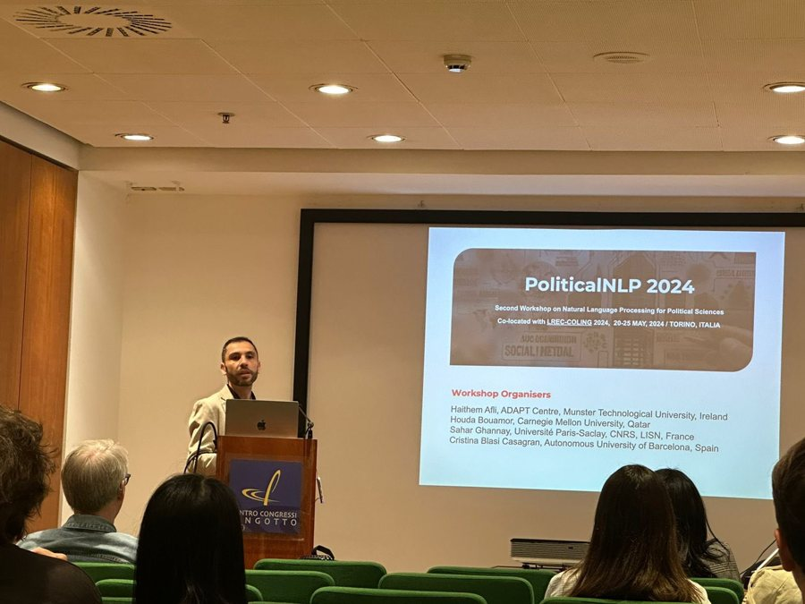
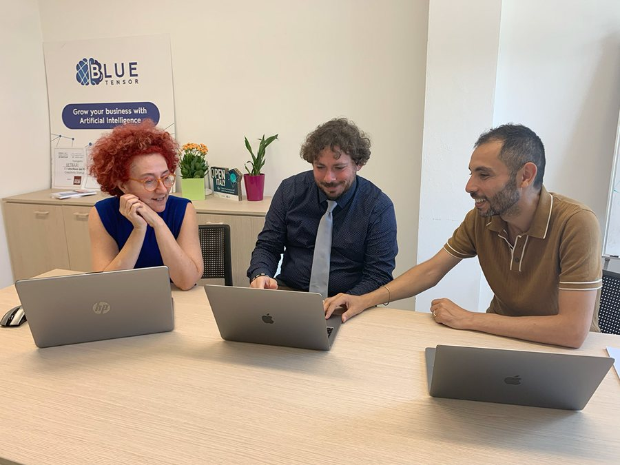
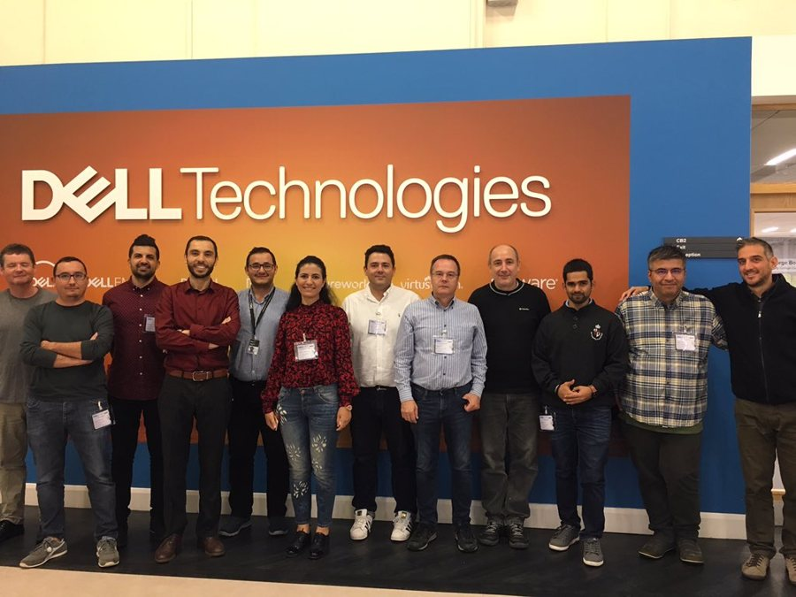
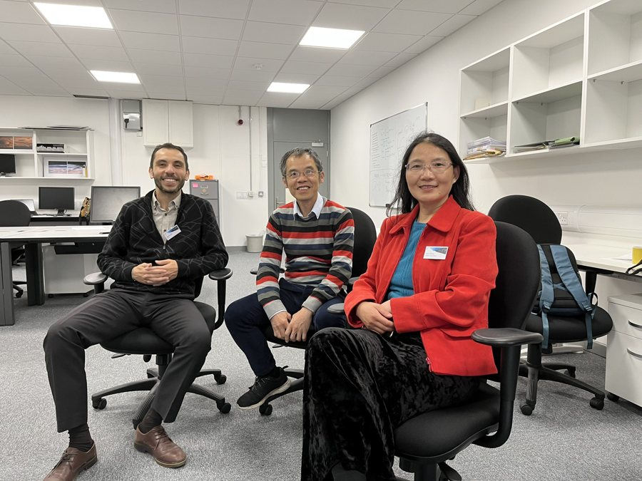
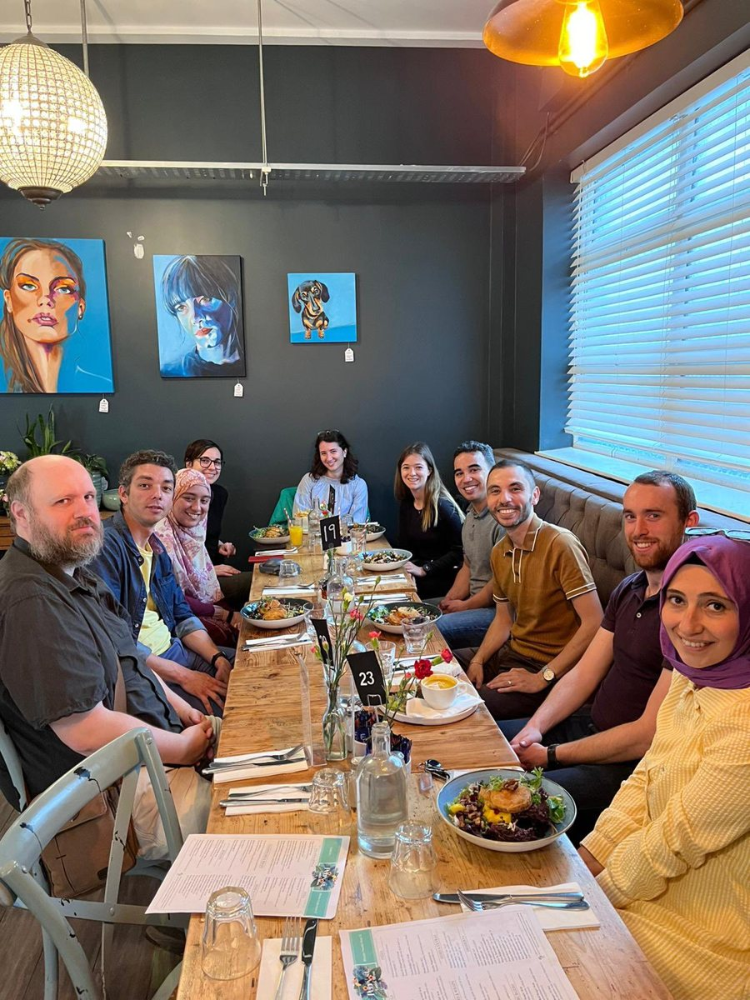

Is aistriúchán é an leathanach seo ar an mbunleagan Béarla, a ullmhaíodh le cúnamh ón intleacht shaorga agus a seiceáladh le huirlisí uathoibríocha gramadaí, litrithe agus téarmaíochta. Níor athbhreithnigh cainteoir dúchais é go fóill; is é an leagan Béarla an leagan údarásach. Léigh an leathanach seo i mBéarla
Meáin
Grianghraif, taifeadtaí agus sleamhnáin ó thaighde, ó theagasc agus ó rannpháirtíocht phoiblí an Dr Afli. Foilsítear gach taifeadadh le tras-scríbhinn, agus ní úsáidtear aon rianú tríú páirtí.
Foilsítear taifeadtaí cainteanna, fuaim, sleamhnáin agus achoimrí grafacha anseo de réir mar a bhíonn siad ar fáil; tá tras-scríbhinn ag gabháil le gach taifeadadh ar mhaithe le hinrochtaineacht.
Grianghraif






